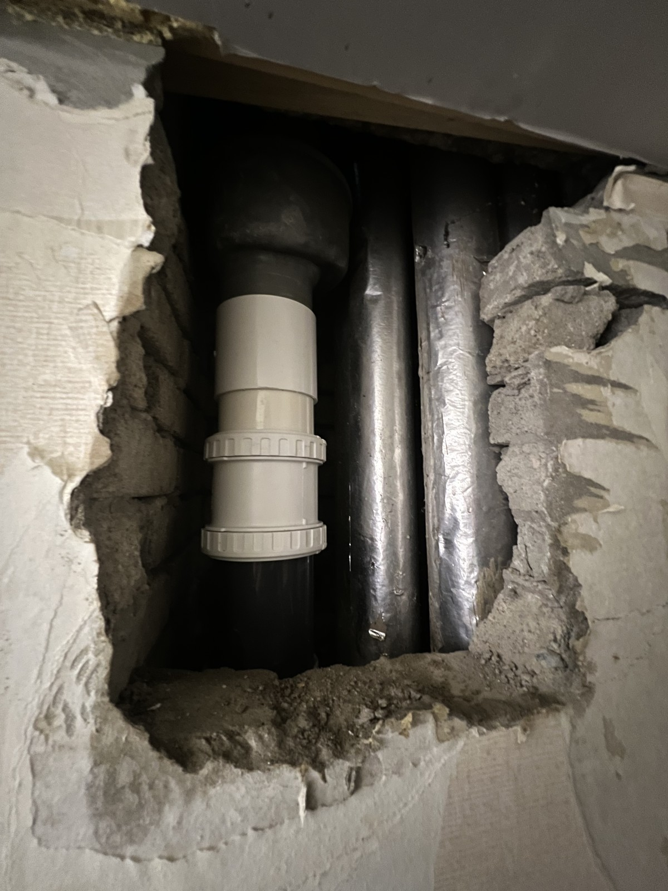
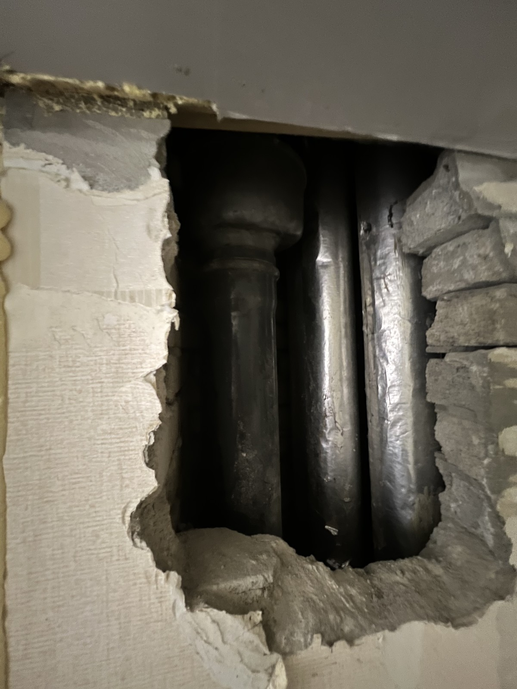
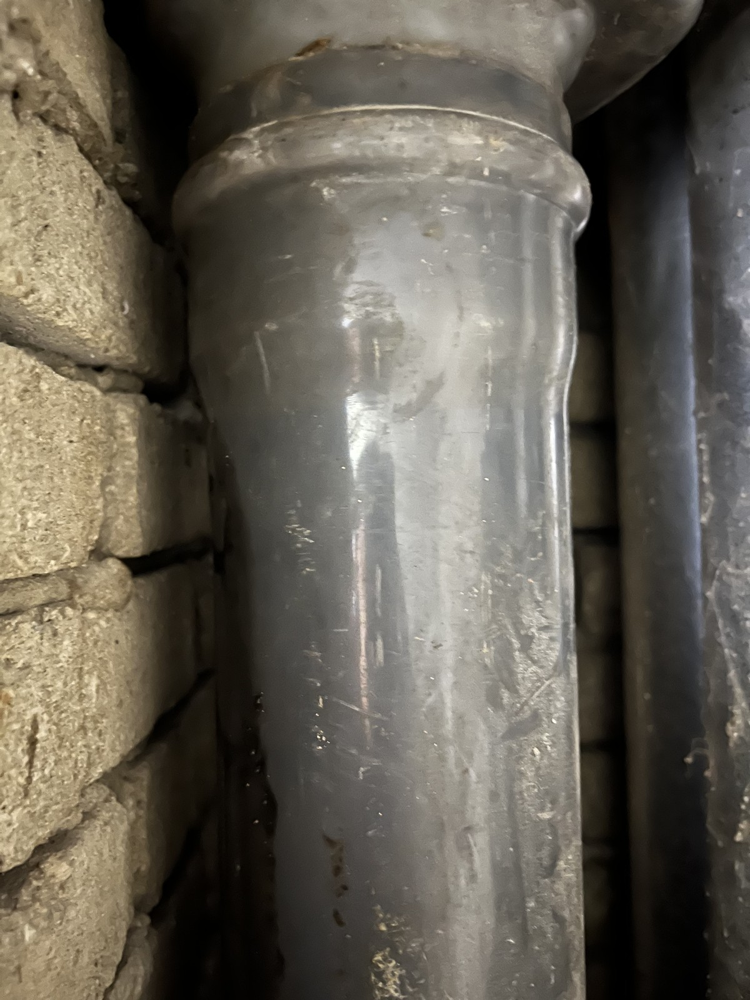
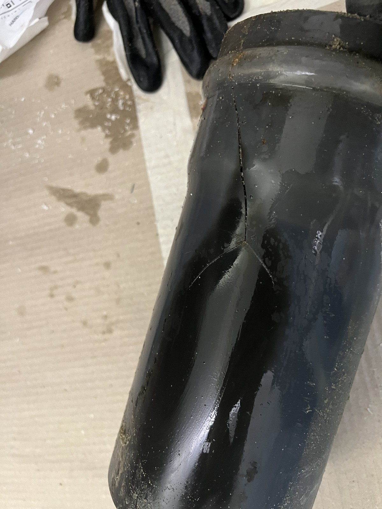
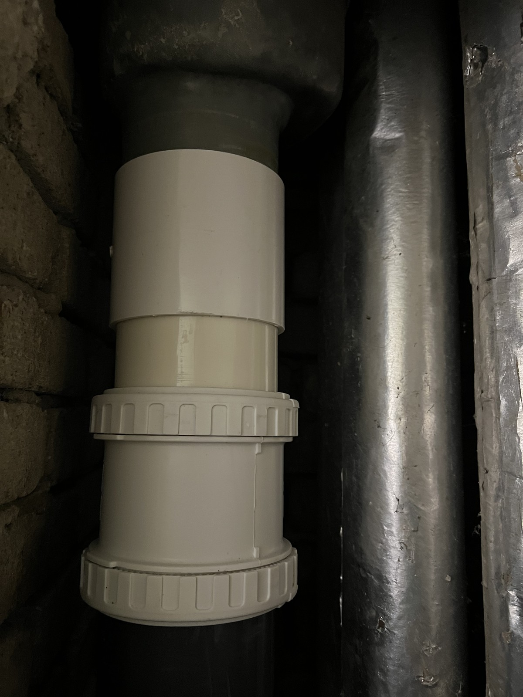

삼성아파트 벽체 배관 부분 교체｜기존 관에서 새 이음부까지

현장 작업 한눈에 보기
- 현장
- 삼성아파트 · 벽체 내부 배관
- 문제
- 기존 배관 상태 확인
분리한 관에 갈라진 부분 관찰 - 작업
- 기존 관 일부 분리
새 배관과 연결 부속 설치 - 결과
- 교체 구간의 연결 상태 기록
벽체 최종 복구·시험 결과는 미확인
벽체를 열어 드러난 기존 관과 분리한 관의 상태, 새 배관 연결부를 차례로 담았습니다. 삼성아파트의 벽체 배관 부분 교체를 실제 사진 5장으로 소개합니다.
마감 전에 남긴 현장 이야기
안녕하세요. 만물인테리어입니다. 이번에는 삼성아파트 벽체 안쪽 배관의 부분 교체 기록을 소개합니다.
2026년 8월 18일 사진을 따라가면 기존 관의 상태와 교체된 구간을 비교할 수 있습니다.
1. 벽체 안쪽에 있던 기존 배관
벽체를 열어 놓은 자리 안으로 기존 관과 주변 배관이 보입니다. 겉면만 볼 때는 알기 어려운 연결 위치를 드러낸 상태입니다.
먼저 이 전체 사진을 보고, 다음 사진에서 관 표면과 이음부를 가까이 살펴보겠습니다.

2. 가까이 본 기존 관과 이음부
기존 관 표면과 위쪽 연결부를 가까이 남겼습니다. 표면에 남은 흔적은 보이지만, 이 사진 하나로 손상의 원인이나 물이 샌 지점을 확정하지는 않습니다.

3. 분리한 관에서 보이는 갈라짐
분리해 놓은 관에는 길게 갈라진 부분이 보입니다. 벽 안에 있을 때와 달리 관 자체의 상태를 따로 살펴볼 수 있습니다.
충격이나 노후 등 손상이 생긴 이유는 사진만으로 구분하기 어려워 단정하지 않았습니다.

4. 열린 구간에 새 연결부를 넣었습니다
기존 관 일부가 있던 자리에 흰색 배관과 연결 부속이 들어갔습니다. 위아래 기존 관을 사이에 두고 교체 구간이 이어진 모습을 볼 수 있습니다.
배관 전체를 바꾼 공사가 아니라, 사진에 드러난 구간을 중심으로 소개합니다.
5. 벽을 닫기 전 남겨 둔 연결 사진
마지막은 새 이음부를 가까이 촬영한 사진입니다. 교체된 구간이 어디인지 남겨 두면 이후 현장 기록을 다시 볼 때 도움이 됩니다.
이번 자료에는 벽체 최종 마감이나 통수시험 결과가 없어 그 단계까지 끝났다고 적지는 않았습니다.

확인한 범위와 상담 안내
배관 보수를 상담하실 때는 벽 전체와 물 자국이 보이는 부분을 함께 보여 주세요. 철거·배관 교체·시험·벽체 복구가 각각 어디까지 포함되는지 나누어 안내드리겠습니다.
만물인테리어 상담 010-2397-8629. 최종 작업 범위와 금액은 현장 확인 후 안내합니다.